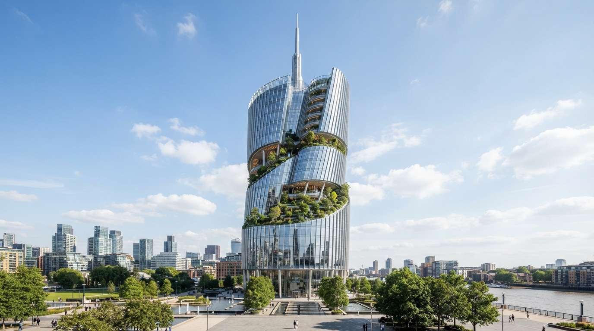
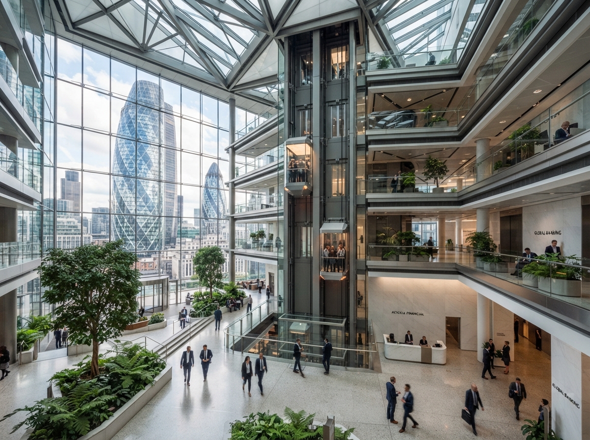
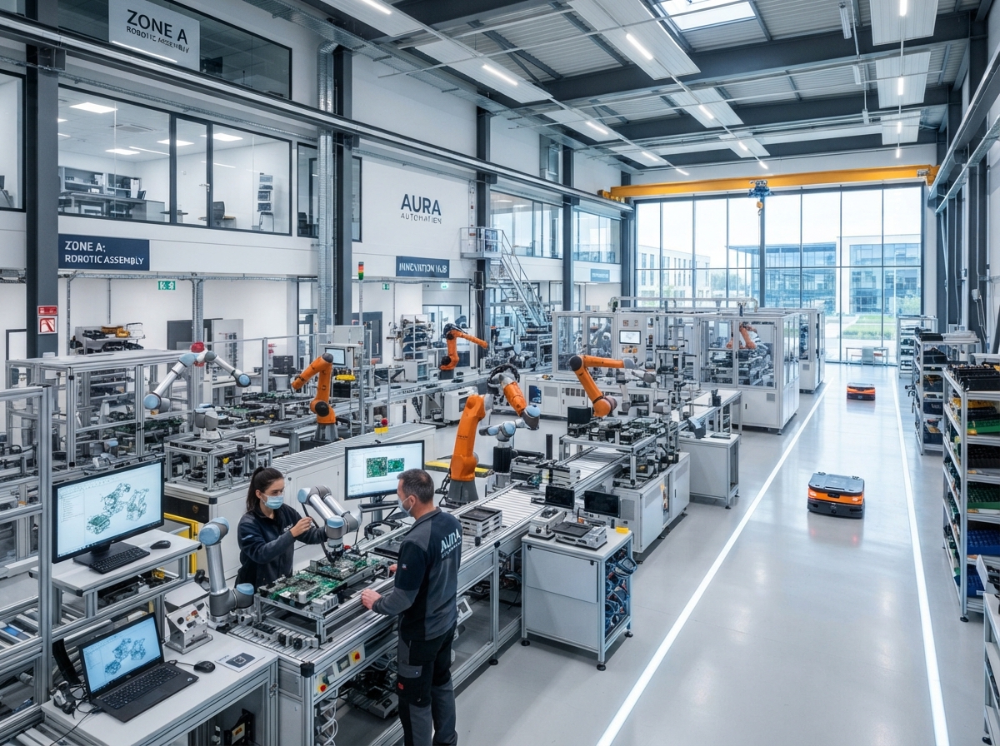
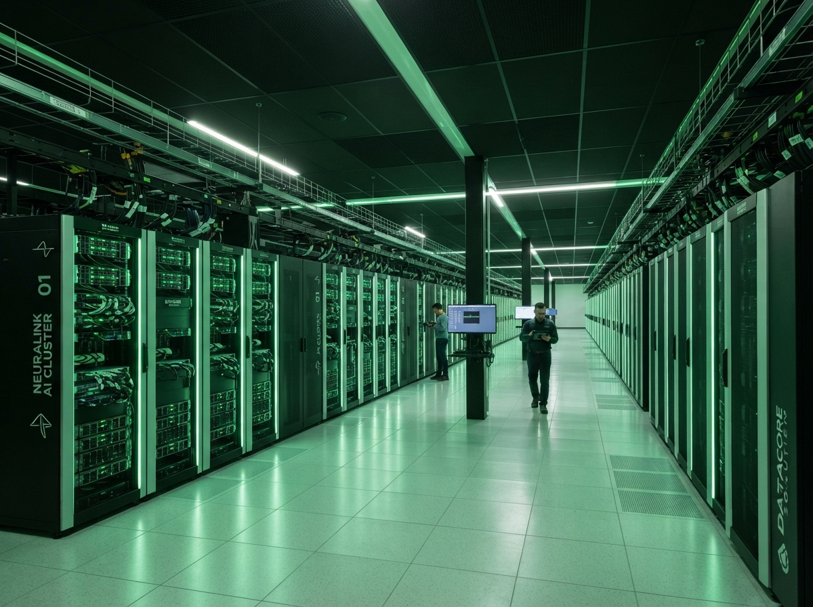
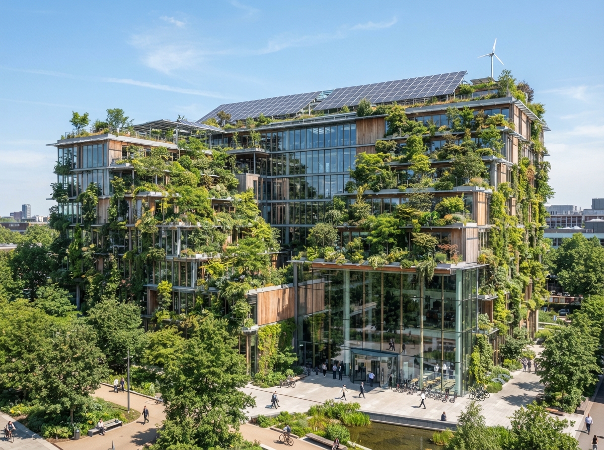
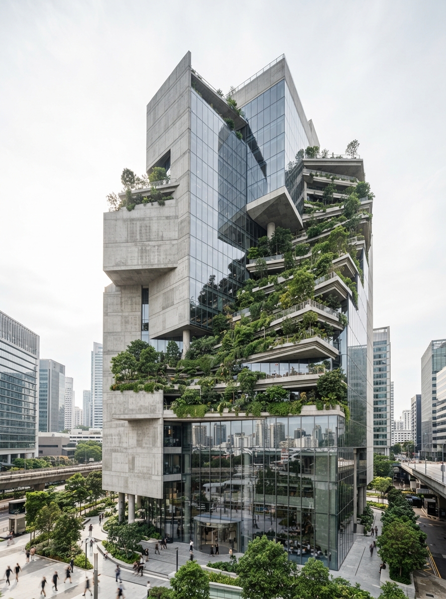

Fueled by Knowledge.
Powered by Strategic Ideas.
Pusat keunggulan terpadu: Layanan konsultasi strategi korporat, tata kelola risiko GRC, sertifikasi sistem manajemen ISO, transformasi digital AI, dan pengembangan human capital berdaya saing global.
Audit Selesai
Tersertifikasi
& Industri
Fund
Group of Knowledge
Menghubungkan keahlian multidisiplin untuk menjawab tantangan strategis, kepatuhan hukum, audit keselamatan kerja, hingga kesiapan kecerdasan buatan.
Strategi & Manajemen Bisnis
Penyusunan RJPP, restrukturisasi korporasi, studi kelayakan investasi, dan evaluasi portofolio holding.

Tata Kelola, Risiko & Kepatuhan (GRC)
Penerapan framework GRC terpadu, audit anti-fraud ISO 37001, dan kepatuhan regulasi OJK/BUMN.

Sistem Manajemen K3 & ESG
SMK3 Kemenaker, ISO 45001, audit keselamatan kerja industri, dan roadmap dekarbonisasi Net-Zero.
Nara Academy & Human Capital
Corporate academy, asesmen kompetensi talenta, kepemimpinan eksekutif, dan sertifikasi BNSP resmi.

IT Governance & Keamanan Siber
IT Master Plan, audit ISO 27001, pelindungan data pribadi (UU PDP), dan tata kelola adopsi AI.

Standarisasi Mutu & Audit ISO
Sistem manajemen terpadu ISO 9001, ISO 14001, ISO 22000, serta persiapan sertifikasi akreditasi KAN.

Konsultasi Hukum & Legalitas Bisnis
Legal audit komprehensif, drafting kontrak kemitraan strategis, penataan lisensi B2B, dan mitigasi dispute.
Supply Chain & Efisiensi Operasional
Optimasi rantai pasok manufaktur, lean logistics, audit pengadaan (procurement), dan penurunan waste.
Inovasi Korporat & Riset Diagnostik
Pengukuran kesehatan organisasi (OHI), design thinking korporat, riset benchmarking industri, dan audit budaya.
6 Pilar Utama Tata Kelola & Eksekusi
Pedoman filosofis dan standar metodologi operasional yang menjiwai setiap penugasan konsultasi, riset, dan pelatihan di Nara Institute.
Spirit & Leadership Integrity
Komitmen Budaya, Nilai Moral & Integritas Kepemimpinan
Fondasi paling esensial dalam seluruh layanan Nara Institute. Menanamkan nilai-nilai luhur kepemimpinan beretika, akuntabilitas moral, dan komitmen profesional yang kokoh bagi seluruh insan organisasi.
- check_circle Integritas tanpa kompromi dalam setiap audit dan rekomendasi
- check_circle Kepemimpinan berbasis empati, resiliensi, dan visi jangka panjang
- check_circle Penyelarasan budaya kerja korporat dengan nilai-nilai kemanusiaan
- check_circle Transparansi tata kelola yang memancarkan otoritas moral
Dipercaya Mengawal Ekosistem Bisnis Terbesar
Mendampingi konglomerasi, BUMN, dan lembaga pemerintah dalam menavigasi kompleksitas regulasi dan kepemimpinan masa depan.
Proyek Konsultasi & Klien B2B Selesai
Alumni & Profesional Tersertifikasi
Tingkat Kepuasan & Retensi Kemitraan
Hubungi kami untuk mengetahui bagaimana Nara Institute dapat membantu organisasi Anda.
Konsultan senior kami siap mendiskusikan kebutuhan spesifik Anda—mulai dari audit tata kelola, evaluasi risiko, sertifikasi K3/ISO, hingga program pelatihan in-house yang dirancang khusus.